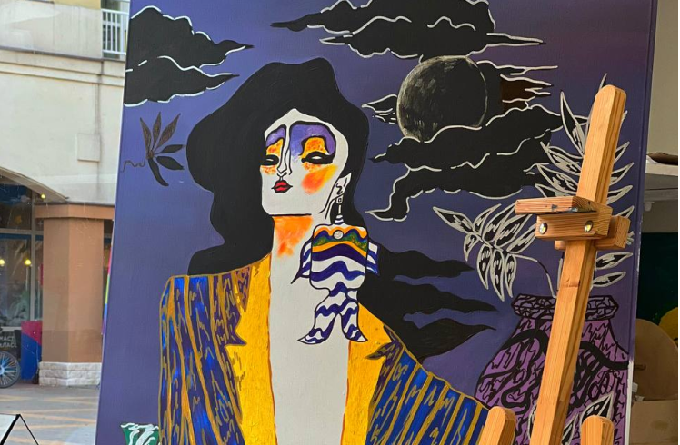
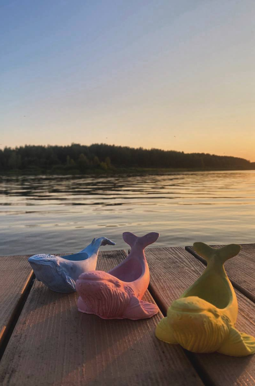
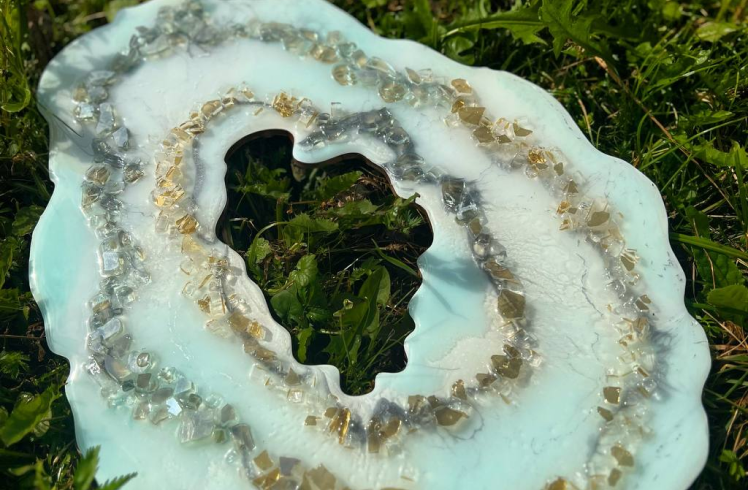

Творческое
пространство
Вдохновляйтесь и создавайте
шедевры, которые захватывают дух
Делитесь своим опытом
через статьи и фотографии
[ Галерея ]
Игра с цветом является важным
инструментом создания красивых и
гармоничных произведений искусства.
-
02/23Майкл Джексон
-
02/23Киты
-
02/23срез камня
[ Статьи ]
Просмотрите интересные статьи
про искусство.
-
20 марта 2024
Artsy анализирует состояние рынка фотографии
портал Artsy анализирует состояние рынка фотографии и сообщает
о новых аукционных рекордах. -
20 марта 2024
Открыт 232-й кураторский аукцион AI «21-й век»
открыт 232-й кураторский аукцион AI «21-й век. Современное
российское искусство». -
26 марта 2024
HISCOX Art and AI Report 2024
"коллекционеры искусства — об искусственном
интеллекте" - отчет HISCOX Art and AI Report 2024
сообщает о том, что коллекционеры искусства все
больше интересуются искусственным интеллектом. -
26 марта 2024
Объем кредитов под залог предметов искусства
объем кредитов под залог предметов искусства растет последние пять лет и может составить
$36 млрд к концу года.
[ Вопросы ]
Всегда готовы выслушать и ответить
на ваши вопросы.
- [ 01 ] Искусством может заняться каждый?
- [ 02 ] Что такое арт-терапия?
- [ 03 ] Что нужно чтобы рисовать на природе?
- [ 04 ] Мастер-классы это только для детей?
- Искусством может заняться каждый, главное желание и стремление учиться новому
- это метод психотерапии, использующий творческое самовыражение для улучшения психического и эмоционального состояния.
- Чтобы рисовать на природе, нужны мольберт, краски, кисти, бумага или холст, а также удобное место для работы.
- Мастер-классы подходят не только для детей, но и для взрослых, желающих развить свои творческие навыки и получить новый опыт.